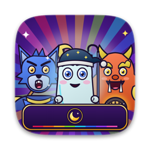

TumblecrestPrivacy Policy
Offline play sends nothing. Online play (optional, with the full game) needs no email, real name or password: our server keeps a made-up player name, your Mac’s public key, your online levels and results, and a scrambled form of your license key.
This policy explains how Tumblecrest (“the app”), a Mac game: an original platform fighter for 1 to 4 players, developed by Kevin Fitzgerald, handles information.
Information we collect
Nothing when you play offline. If you play online: a random account id, your player name and your Mac’s public key (to sign you in); your online levels, ranked results, leaderboard standing and online stats (matches and wins against players and against the game’s CPUs, tumbles, falls, damage, spikes, parries, your longest combo, streaks, the fighters you play and your last 20 ranked matches); a scrambled (keyed-hash) form of your license key with Gumroad’s last answer about it (valid or refunded; nothing else from Gumroad’s reply is kept); for each season, every fighter’s games and wins in player matches with no player attached (for the fighter tier lists); and, only for a match whose result is disputed, that match’s inputs for 30 days. Your network address is used while you’re connected, to carry the match, limit abuse and pick a server region near you, and isn’t saved. Tumblecrest has no analytics, advertising, crash-reporting or tracking tools.
Information stored on your Mac
To work, the app keeps the following on your Mac only:
- Your story progress, medals, best times and unlocked colors, in a file in the game’s own folder on your Mac
- Your last 20 replays (and the ones you star), and the clips you save
- Your settings: controls, profiles, sound, graphics and accessibility options
- Your license key, in your Mac’s Keychain
- If you play online: the private half of your online player key, made on your Mac and kept in its Keychain (it never leaves this Mac; our server gets only the public half), and your account id and player name in the game’s preferences. The sign-in session is kept only while the game is open
Progress, replays and settings are in Tumblecrest’s Application Support folder and preferences, inside its sandbox; clips are saved where you choose; the license key and the online player key are in your Keychain.
Online play
Tumblecrest works fully offline. Online play comes with the full game. When you first go online, your Mac makes a private key that stays in its Keychain, and our server gives you a made-up player name (you can draw another). We don’t ask for an email address, a real name, your age or a password. Each time the game signs in online it sends your license key to our server, which checks it with Gumroad, our store; we keep only a scrambled form of the key, never the key itself. On our server we keep your player name, your Mac’s public key (how the server recognises you), your online levels and recent ranked match results, and that scrambled license key (to check your purchase and to keep one ranked player per license). Other players see your player name and level. Your online stats are public: anyone can look them up by your player name, in the game and on a web page (play.fitztoppicks.com/p/ followed by the name): your rank, matches and wins against players and against the game’s CPUs (kept apart), tumbles, falls, damage, spikes, parries, your longest combo, streaks, the fighters you play and your last 20 ranked matches with the other players’ names. Players in the top 50 of a ranked list are shown there with their name, rank, points and wins. Fighter tier lists (play.fitztoppicks.com/tiers) are worked out from everyone’s player matches and show no names. When nobody else is searching, ranked can match you with the game’s own CPU, always marked as a CPU. Matches pass through our relay, hosted on Cloudflare, so other players never see your network address; we use it only while you’re connected, to carry the match, to limit abuse and to pick a server region near you (from the rough area the address belongs to), and don’t save it. There is no text or voice chat. We don’t sell or share this data or use it for advertising. Sessions last a day; a lobby is gone minutes after the last player leaves; a disputed match’s inputs are kept for 30 days; everything else stays until you delete the player, except your license’s ranked level. Online › Account › Delete this online player removes your name, key, levels, stats and match results from our server at any time; your ranked level stays with your license (without any match history) for the next player who plays ranked with it.
Network
Tumblecrest is sold directly through Gumroad. Besides online play (only when you choose it, with our server at play.fitztoppicks.com), its network requests are the license check with Gumroad (your license key, when you enter it and about once a week) and checks for game updates at fitztoppicks.com. No analytics, no ads.
Updates and license checks
Tumblecrest, downloaded directly from Gumroad or fitztoppicks.com and signed with Apple’s Developer ID, checks for app updates with Sparkle, a standard open-source updater: it downloads a small update list (an appcast) from fitztoppicks.com, which sees only the app’s version and, like any website, your internet address, and it downloads an update only when one is available and you choose to install it (or have turned on automatic updates). When you enter a license key, Tumblecrest sends that key to Gumroad to verify it, and checks it again about once a week; that is all it sends to Gumroad. Neither sends anything about you, your files or how you use the app.
Purchases
Tumblecrest is sold directly through Gumroad, which handles payment and sends your receipt and license key; we never see your payment details. The app sends your license key to Gumroad to check it (when you enter it and about once a week); that is all it sends to Gumroad.
Children’s privacy
Tumblecrest is made for a general audience and isn’t marketed to children. Online play asks for no email, real name, age or contact details, has no chat, and player names are made up by the game. The identifiers it uses (the account id, your Mac’s public key, your network address and the sign-in session) are used only to run online play: to sign you in, carry matches, keep ranks, stats and leaderboards, and protect the service from cheating and abuse. They are never used for advertising, to contact anyone or to build an advertising profile, and are shared with no one except Cloudflare, which hosts our server. A parent can delete a player in the game (Online › Account › Delete this online player) or by emailing help@fitztoppicks.com with the player name.
Changes to this policy
If this policy changes, the new version will be posted on this page with a new effective date. If what the game collects ever changes, this policy will be updated before that happens.
Contact
Questions about this policy or the app: help@fitztoppicks.com.